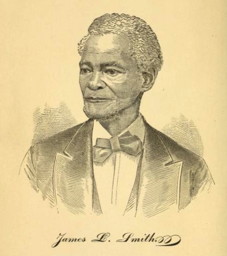
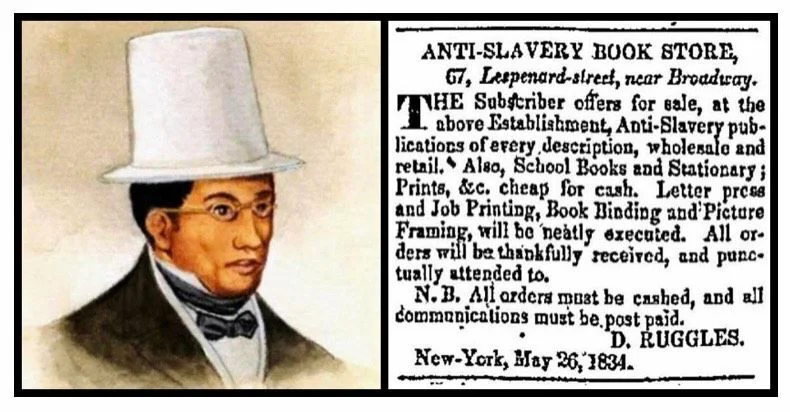

Why Begin in the South?
This project begins in the South not to shift attention away from Middletown, Connecticut, but to explain why northern places like Middletown mattered. The Underground Railroad was not simply a northern abolitionist network; it was shaped first by enslaved people who made the dangerous decision to leave slavery. Their movement transformed towns, churches, rivers, roads, and homes into a geography of resistance.
Rev. James L. Smith’s narrative is especially useful for this project because it connects slavery in Virginia to Black freedom-making in Connecticut. Smith was born enslaved in Northumberland County, Virginia, escaped northward in 1838, and later built a life in Connecticut. His story shows how the journey from slavery to freedom depended on courage, mobility, secrecy, and support from Black and abolitionist communities along the route.

Rev. James L. Smith, formerly enslaved in Virginia, whose escape narrative traces a journey from the South to Connecticut.
James L. Smith’s Escape
In Chapter IV of his autobiography, Smith describes planning his escape with others and using a boat to leave Virginia. After traveling by water, he reached Frenchtown, Maryland, continued on foot toward New Castle, and eventually made his way through Philadelphia and New York. His route demonstrates that escape was not a single heroic moment, but a series of uncertain decisions made under exhaustion, fear, and constant danger.
One of the most powerful moments in Smith’s narrative occurs when he is separated from his companions and considers turning back. Instead, he resolves to keep moving northward. This moment matters because it reveals the emotional reality of flight: escape required not only physical movement, but also the ability to continue despite loneliness, hunger, disability, and the possibility of capture.
From Virginia to Connecticut
Smith’s journey also shows how Connecticut fit into a broader network of assistance. After reaching New York, Smith was directed to David Ruggles, a major Black abolitionist and vigilance committee organizer. Ruggles then gave him letters to contacts in Hartford and Springfield, helping him continue his journey north. When Smith arrived in Hartford, local abolitionists helped raise money and sent him onward to Springfield.

David Ruggles, a Black abolitionist in New York, operated an anti-slavery bookstore and helped guide freedom seekers—including James L. Smith—northward.
When Smith reaches Hartford, he’s helped by Henry Foster, a free Black man who was closely conencted with the Beman’s of Middletown. This shows that the Underground Railroad was a connected system of Black communities across cities, not just isolated acts of help.
This connection is important for a project about Middletown because it shows that Connecticut was not isolated from the Underground Railroad. It was part of a wider chain of movement, communication, and aid. The same forces that brought Smith to Hartford also help explain how Connecticut River towns such as Middletown could become meaningful places in the struggle for freedom.
What Smith’s Story Reveals
Smith’s narrative helps this project frame the Underground Railroad as a lived experience rather than only a map of secret routes. His story includes forced labor, religious life, planning, fear, assistance from strangers, and the gradual rebuilding of life after escape. It also shows that Black resistance did not end once a person crossed into a free state. Freedom still had to be protected, supported, and made livable through churches, schools, work, and community institutions.
For that reason, the South functions here as the beginning of a longer story. Smith’s escape helps connect the violence of slavery in Virginia to the importance of Black communities and abolitionist networks in Connecticut. His journey prepares us to understand Middletown not simply as a northern town, but as part of a regional freedom network.
Featured Primary Source
James L. Smith, Autobiography of James L. Smith, Including, Also, Reminiscences of Slave Life, Recollections of the War, Education of Freedmen, Causes of the Exodus, etc., published in Norwich, Connecticut, 1881.
Read the source →